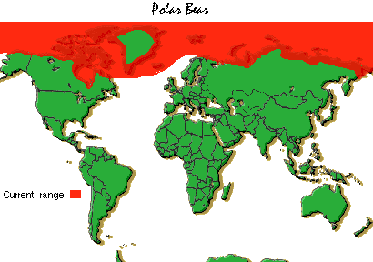

What is happening to them?
Polar Bears are apart of the many animals that are becoming endangered because their population is decreasing. The possible demise of the polar bear is tied directly to the effects of global warming. Sea ice is the key habitat for the polar bear providing dens, hunting grounds, and means of travel. he loss of summer sea ice will result in the decline of suitable hunting grounds for the polar bear, forcing them to travel greater distances to hunt. The polar bear was the first mammal to be listed as Threatened due primarily to global warming.
What makes them special?
Polar bears are strong swimmers, and individuals have been seen in open Arctic waters as far as 200 miles from land, although swimming long distances is not preferred since it requires so much energy for adults and can be fatal to younger bears. Cubs will remain with their mothers for a little over 2 years. Female polar bears can produce five litters in their lifetime, which is one of the lowest reproductive rates of any mammal. A large male can weigh more than 1,700 pounds, while a large female is about half that size (up to 1,000 pounds). The bear's outer layer of fur is hollow and reflects light, giving the fur a white color that helps the bear remain camouflaged.


Conservation:
Mating for Polar Bears take place on the sea ice but the fertile eggs do not implant until the following fall, and only if the mother has enough fat to sustain herself and her cubs during long the denning season. This process is called delayed implantation. There are still people that hunt Polar Bears in the Artic. Subsistence hunters rely on polar bears for both food and clothing. They use the fur to make warm trousers and kamiks (soft boots). With the drast change in Climate changes Polar Bears have started to move more inland towards humans. Over the past few years, sea ice loss has led to increased polar bear sightings in northern coastal communities.
The polar bear's life cycle is closely tied to sea ice. Polar bears rely on the ice to travel, hunt seals, breed, and in some cases, den. Scientists believe polar bears are unlikely to survive if ice-free periods exceed their fasting ability (220 days), especially in areas that lack alternate marine mammal prey. Arctic weather can be fiercely cold. As humans, we need protective clothing and/or shelter to stay warm. Polar bears don’t. Their bodies thrive in the stark temperatures. The world polar bear population is estimated at 20,000 to 25,000 individuals.This is according to Sea World.